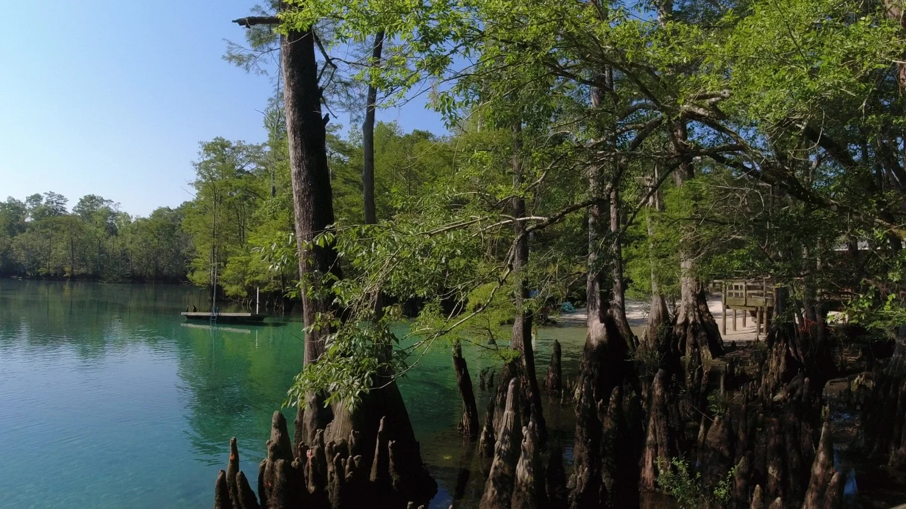
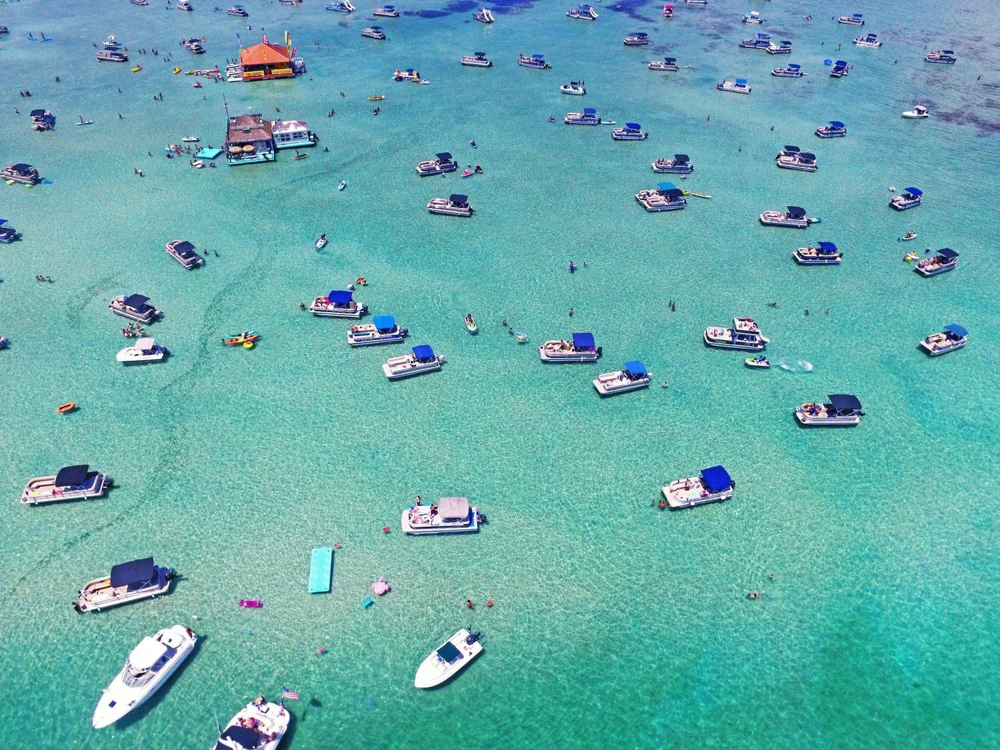
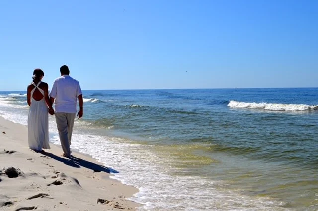

Sailing the Emerald Waters of Destin, Florida

We are back on the water and have lots to share with you! You’ll love this short highlight reel showcasing our many adventures in videos to come!
I didn’t know stingrays jump!
 ▶ Watch on YouTube
▶ Watch on YouTubeSailing the Crystal Clear Emerald Waters near Crab Island
Watch the video or continue to read. (More trip detail below. More actual sailing on the video.) Feel free to view both and enjoy!
We spent two weeks visiting family we haven’t seen in a couple of years due to travel restrictions. It’s a bonus they happen to live in the absolutely beautiful Destin, Florida! (Where Billy grew up.)
If you’re unfamiliar, Destin is a city in northwest Florida, USA; also known as the Panhandle. It’s known for it’s clear emerald water and soft white sand beaches. It’s amazing that you can see the ocean floor more than 10 feet down like you are in a swimming pool!
We swam in one of the beautiful clear water springs not too far away. We’ll post with a video on that soon!

Crab Island
Then there’s the infamous Crab Island. Ahh… what’s not to like? It’s like a 3 foot swimming pool you can anchor your boat in! Billy said when he was very young, his family used to go and snorkel there. He remembers his parents always being careful to watch the strong tides that are sometimes present.

Vacationers from all over the world as well as local residents populate Crab Island every day to swim, play, picnic, and snorkel. Most days dolphins weave in between the many boats!
We almost get hit by more than one boat!
While there this time, we sailed from Joe’s Bayou to the Choctawhatchee Bay every day. We ventured into the Destin Harbor, anchored at Okaloosa Island, touched ground near Elgin Airforce Base, snorkeled the Destin East Jetty (SCARY CURRENT!!!), watched the sun rise and the departure of the fishing fleet at Norriego Point, and even braved to venture out into the Gulf of Mexico!
Bonus insider info: We got married barefoot in 2014 in Fort Walton Beach on the white sands of the Gulf of Mexico.
